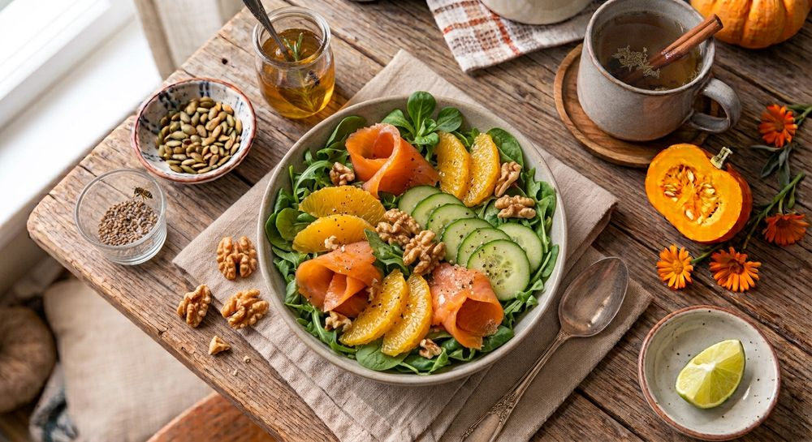
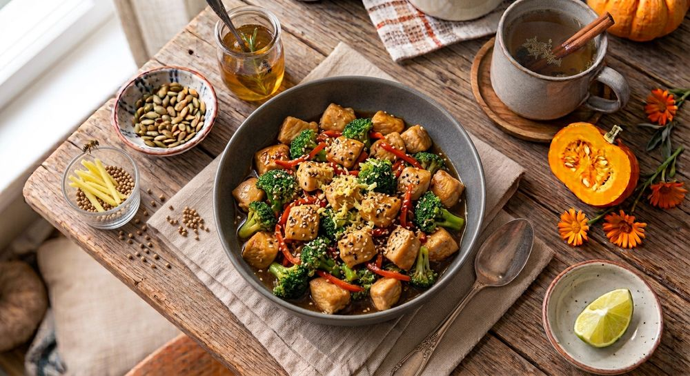

10 recetas gratis
Abre una muestra real y comprueba si el formato, las recetas y El Porqué Biológico son para ti antes de pagar.
Quiero 10 recetas gratisDescarga inmediata, sin pagar nada. Además, te invitamos a la comunidad de WhatsApp de StudyOS.
100 RECETAS + STUDYOS+
StudyOS reúne 100 recetas y una herramienta interactiva para ayudarte a encontrar una opción según tu etapa, lo que buscas hoy y el tiempo que tienes.
Sin registro para probarlo. Responde 5 preguntas y descubre una receta de las 100.
TU RECETA DE HOY

10 minUna opción seleccionada según tus respuestas de hoy.

Wok de pollo15 min · 370 kcalNO TE LO EXPLICAMOS. PRUÉBALO.
Prueba aquí el mismo tipo de selección que usamos para ayudarte a encontrar una receta del recetario.
🔒 No guardamos ni enviamos tus respuestas.
PRUEBA STUDYOS
Responde cinco preguntas y te mostraremos una receta del recetario seleccionada a partir de tus respuestas.
Cada etapa tiene sus ritmos. Elige la que más se parezca a hoy.
Ya lo elegimos según tu enlace. Puedes cambiarlo.
Si todavía tienes ciclo regular
¿No sabes en qué fase estás? Elige “No lo sé” y seguimos sin filtrar por etapa.
No hay respuestas correctas ni incorrectas. Elige lo que más te importa ahora.
Ya lo elegimos según tu enlace. Puedes cambiarlo.
Empezamos por un momento concreto; el resto viene después.
Ya lo elegimos según tu enlace. Puedes cambiarlo.
Así evitamos recomendarte algo que no encaje. Puedes marcar varias opciones.
Lo que sea realista para ti hoy. Sin culpas.
El test da una receta por persona. Para elegir entre las 100 recetas cuando quieras, con menús semanales y listas de la compra, tienes el recetario completo. Y si quieres probar el método antes, descarga 10 recetas gratis.
Es una orientación para inspirarte, no un diagnóstico ni un consejo médico personalizado.
SIN CAJA NEGRA
Nada de comprar a ciegas. Explora recetas reales, su estructura, los menús y las herramientas que forman StudyOS.
Fase menstrual
Tiempo de preparación: 10 minutosCalorías aproximadas: 380 kcal
Dificultad: FácilAlérgenos: Pescado
Perder entre 30 y 80 ml de sangre durante la regla provoca caídas notables de hierro sérico, y las lentejas son una de las mejores fuentes vegetales para reponerlo. Su absorción se multiplica al combinarse con la abundante vitamina C del pimiento rojo asado, un detalle nutricional que marca la diferencia. El vinagre de manzana cierra el plato mejorando el vaciado gástrico y reduciendo la inflamación abdominal.
Fase menstrual / Menopausia
Tiempo de preparación: 5 minutosCalorías aproximadas: 330 kcal
Dificultad: Muy bajaAlérgenos: Lácteos, frutos secos
Iniciar la mañana sin carbohidratos de alto índice glucémico frena drásticamente el pico de glucosa e insulina. El aguacate y el yogur aportan ácidos grasos monoinsaturados y de cadena media que promueven la síntesis de hormonas esteroideas (como la progesterona).
Las semillas molidas aportan lignanos, unos fitoestrógenos clave para modular la sobrecarga estrogénica o suavizar la caída hormonal en la menopausia. La canela, mimética de la insulina, actúa optimizando los receptores celulares de glucosa, evitando los bajones de energía y los picos de cortisol a media mañana.
Fase ovulatoria / Perimenopausia / Menopausia
Tiempo de preparación: 10 minutosCalorías aproximadas: 415 kcal
Dificultad: BajaAlérgenos: Pescado, frutos secos
Durante la fase ovulatoria o en momentos de declive hormonal, los picos de inflamación pueden alterar el tejido reproductivo y vascular. El salmón y las nueces aportan una altísima densidad de ácidos grasos omega-3 (EPA y DHA), que reducen la síntesis de prostaglandinas proinflamatorias.
La vitamina C de la naranja y el limón no solo actúa como un antioxidante directo en el folículo, sino que multiplica la biodisponibilidad del hierro no hemo de las hojas verdes. Además, la amargura de la rúcula estimula la segregación de bilis, facilitando la correcta eliminación metabólica de estrógenos en el hígado.
Fase folicular / Perimenopausia / Menopausia
Tiempo de preparación: 15 minutosCalorías aproximadas: 370 kcal
Dificultad: BajaAlérgenos: Sésamo, soja
En la fase folicular, el cuerpo necesita nutrientes de apoyo para construir tejido y metabolizar el aumento de estrógenos. El brócoli es rico en indol-3-carbinol y sulforafano, compuestos azufrados indispensables para activar la detoxificación hepática de fase II (fase de eliminación de estrógenos usados). El pollo proporciona proteínas magras ricas en tirosina para respaldar la producción de dopamina y la motivación. Las semillas de sésamo aportan zinc y calcio, necesarios para la maduración folicular y la densidad ósea en la mujer.

Sugerencia de presentación
Del recetario completo
YA LO ESTÁN USANDO
Experiencias de lectoras que ya han cocinado con StudyOS.
Me encantó el diseño y los menús semanales.
Las recetas me quedaron espectaculares y me sentaron genial!!!
…el apartado de “El Porqué Biológico” en cada una. Descubrí por qué ciertos ingredientes me daban pesadez y cómo combinarlos para mantener la glucosa estable.
Estaba harta de las típicas dietas estrictas de pollo a la plancha y lechuga. Este libro me demostró que comer antiinflamatorio puede ser variado, sabroso y súper saciante.
He probado ya diferentes productos de esta marca y no puedo estar más agradecida.
De verdad, recomendado al 100%, trato de 10 y productos super útiles.
TODO EN UN MISMO SITIO
No es una dieta ni un libro de reglas. Es una herramienta para elegir qué cocinar según cómo estás hoy.
Al completar el pago te llevamos a una página con el botón de descarga inmediata y un enlace alternativo para verlo online si no se abre. Guarda el PDF en tu dispositivo para tenerlo siempre a mano.
Sí. El precio es de 5 €. El pago es seguro y lo gestiona Stripe con tarjetas de crédito o débito. Si pagas desde un país con otra moneda, tu banco puede aplicar la conversión correspondiente.
No. Funcionan en tu dispositivo: no guardamos ni enviamos tus respuestas ni la fecha de tu regla. Solo, si aceptaste las cookies de medición, se recuerda en tu dispositivo que ya hiciste el test (no lo que respondiste) y se cuenta que alguien lo completó, sin ningún dato personal.
No. No hay que contar calorías ni pesar la comida, y no hay alimentos prohibidos. Es una guía práctica para elegir platos sencillos y saciantes que acompañen a tu cuerpo.
Sí. Las recetas están pensadas tanto para las fases del ciclo como para la perimenopausia y la menopausia, y cada una indica para qué momento encaja mejor.
No. Son platos sencillos, con pasos claros y pocos ingredientes, y la mayoría están listos en 25 minutos o menos.
El gratuito reúne 10 recetas para que pruebes el método. El de pago incluye 100 recetas, StudyOS+, 6 menús semanales, 6 listas de la compra, una guía de batch cooking y una guía de alimentos y sustituciones.
Escríbenos por mensaje directo a @studyos_oficial en Instagram y lo resolvemos.
No. StudyOS ofrece contenido educativo. Si tienes una condición médica o tomas medicación, consúltalo con una profesional antes de cambiar tu alimentación.
100 recetas, 6 semanas de menús, listas de la compra, El Porqué Biológico y StudyOS+ por 5 € en un único pago.